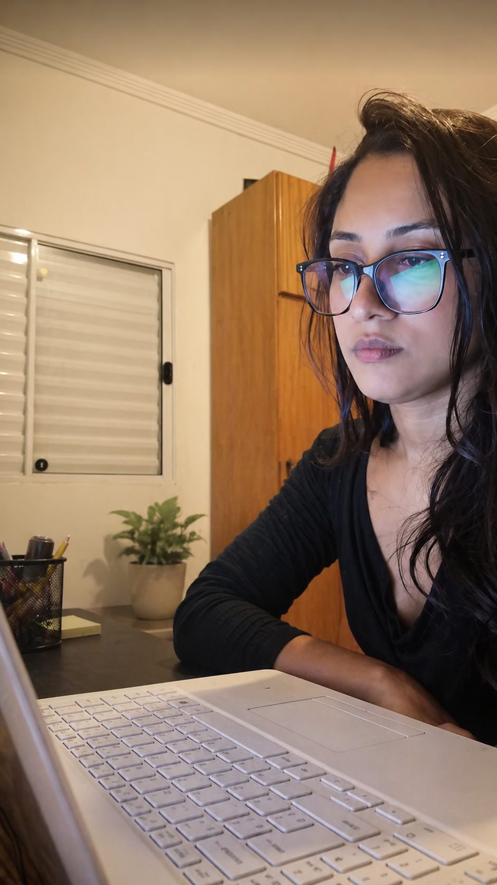

Desenvolvedora Full Stack em transição, com experiência prática em desenvolvimento front-end e back-end, focada em construir soluções completas com JavaScript, TypeScript e Node.js. Acredito que boa tecnologia começa com pessoas.

Minha jornada não é linear: transitei pela saúde, vendas e design até encontrar na tecnologia o meu propósito. Na Fisioterapia, entendi que recomeçar exige resiliência; no empreendedorismo, lapidei minha comunicação e visão estratégica; e no design, apurei meu olhar para a experiência do usuário. Hoje, conecto toda essa bagagem na minha atuação como desenvolvedora em formação.
O ponto de virada aconteceu de forma prática. O que começou como curiosidade ao gerenciar meu próprio e-commerce tornou-se paixão ao colaborar no front-end de um projeto pessoal. Percebi que não queria apenas utilizar ferramentas, mas sim construir soluções. Essa motivação me levou ao bootcamp da Generation Brasil, onde mergulhei no desenvolvimento web, trabalhando com JavaScript, TypeScript e Node.js em projetos reais e colaborativos.
Hoje curso Sistemas de Informação e meu foco é evoluir como desenvolvedora Full Stack, criando soluções completas, bem estruturadas e centradas em pessoas.
Loja virtual de roupas femininas com catálogo fixo de produtos e finalização de pedidos via WhatsApp, simulando a experiência de um e-commerce simples voltado para pequenos negócios.
Ver projetoInterface de sistema para organização e controle de cotas em cooperativas, com foco em estruturação de dados e usabilidade.
Ver projetoAPI desenvolvida para simulação de sistema de seguros de vida, com foco em estruturação de dados e regras de negócio.
Ver projetoInterface de sistema para gestão de membros, eventos e grupos de igreja, com foco em organização e usabilidade.
Ver projetoEstou aberta a oportunidades, colaborações e conversas sobre tecnologia e criação.